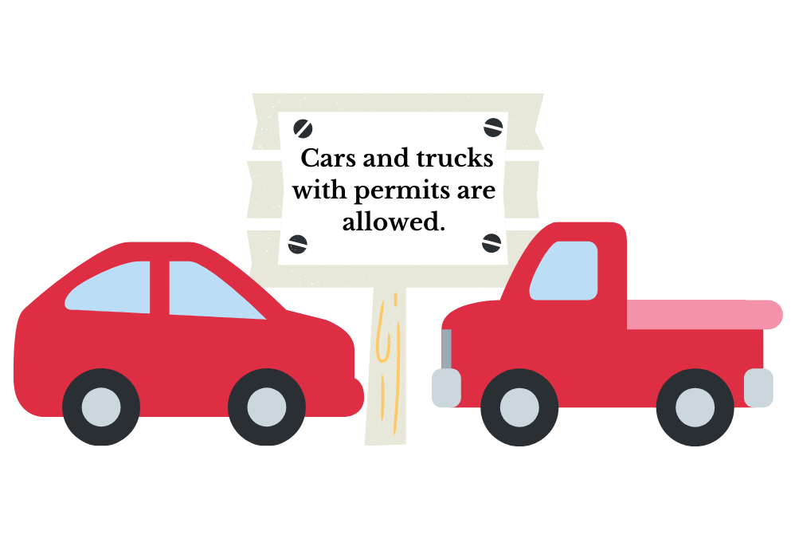

I worked in the Linguistics and Law Lab at Northeastern through 2022 and 2023. The LingLawLab uses linguistics research to improve the law.
The study I was most involved with was the Ambiguity Project, which examined people's natural interpretation of ambiguous sentences.
For example, if you drive into a parking lot, and the sign reads "Cars and trucks with permits are allowed." You're driving a car and have no permit. Can you park?

If the sign means "[cars] and [trucks with permits]", then you can park: only the trucks need permits. If the sign means "[cars and trucks] with permits", then you can't park. When this same ambiguity arises in the law, what should happen?
I co-wrote our paper, and co-wrote and co-presented our poster at the Linguistic Society of America, and Germanic Society for Forensic Linguistcs, in 2023.
Follow the above links to see more about the LingLawLab's work in general, and the Ambiguity Project in particular, and this link to see the wonderful people who also did all this co-writing and co-presenting.